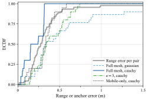
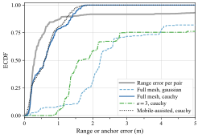

![Decision tree. Start at the deployment and add the nuisance states of its primitive. If the anchors can measure each other and a mobile device also ranges to them, the leaf is mobile-assisted. If no mobile device ranges and all anchor pairs range directly, the leaf is fully meshed. Otherwise the thinned graph is tested for global rigidity, which leads to the multi-hop leaf, or to adding links, a mobile or seeds, or to comparing starts. If the anchors cannot measure each other, a moving device leads to the mobile-only leaf, a static device to collecting motion, and no calibration measurements to a manual survey.](assets/fig/tutorial-fig12-decision-tree.svg)
PreprintUnder review · 2026
A Tutorial on Infrastructure Self-Calibration for Radio-Based Indoor Positioning
Teaches infrastructure self-calibration as one factor graph and carries a recorded session through every step, with released code that recomputes every result table.
Aim. To let a reader state a deployment as one factor graph, judge from its edge set what the ranges can identify, choose an algorithm family and its starting point, and check a calibration before trusting it.
Two-dimensional UWB two-way ranging. One static session of the LOS deployment of UWB-ASC runs through every step, and the NLOS deployment and the public TWR-CLOUD-Bern dataset serve as contrasts.
- Range-based calibration is one factor graph. The measurement topology sets its factors, and the reference information enters as priors.
- Rigidity and the motion of a mobile device decide what the ranges can identify. Multidimensional scaling, nonlinear least squares, recursive filters and convex relaxations act as inference engines over the same graph and differ in their data interface and in their need for a starting point.
- Three lessons and a decision tree lead from a deployment to a method, and the released code recomputes every result table.
| Finding and action | Where | without (m) | with (m) |
|---|---|---|---|
| Loss before engine (VI-A): gaussian → cauchy | full meshes, NLOS deployment | 3.94 | 0.79 |
| Start decides (VI-B): classical start → oracle start | globally rigid random views of s03 | 4.03 | 0.24 |
| Range bias (VI-C): no offsets → per-device offsets | full meshes, LOS deployment | 0.23 | 0.13 |
Mobile-only (VI-D): ekf_slam → fg_slam | walk s01, LOS deployment | 1.88 | 0.36 |
| Seeds (VI-E): blind → three seeds | κ=3 view of s03 | 0.43 | 0.71 |
Aligned anchor RMSE of the factor graph or of the engines a row names, under the cauchy kernel unless the action changes it, as medians where a row covers several sessions or views. The oracle start is the survey, and κ is the thinning level of the multi-hop views.

